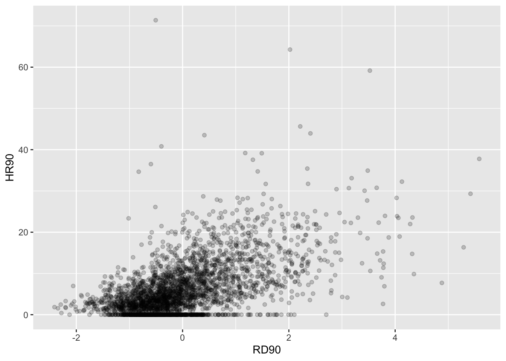
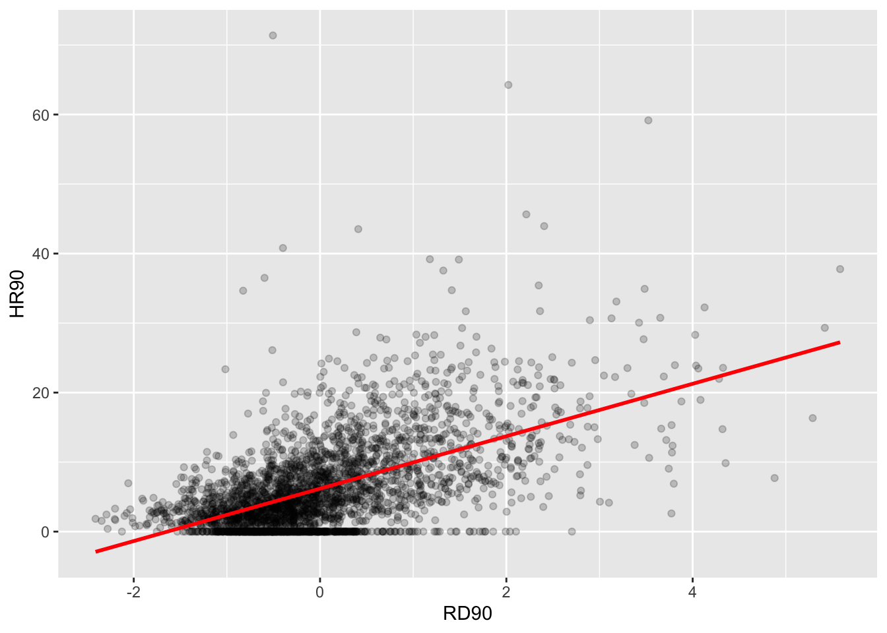
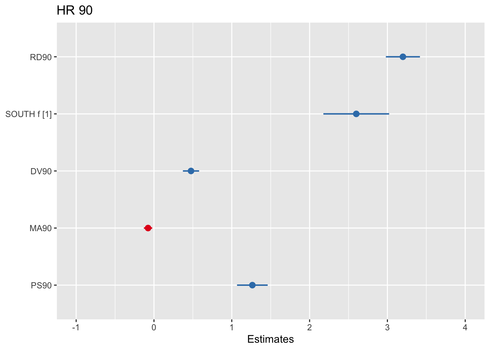

Chapter 8 Regression analysis (a refresher)
8.1 Introduction
In science one of our main concerns is to develop models of the world, models that help us to understand the world a bit better or to predict how things will develop better. You can read more about modelling in scientific research here. Statistics provides a set of tools that help researchers build and test scientific models.
Our models can be simple. We can think that unemployment is a factor that may help us to understand why cities differ in their level of violent crime. We could express such a model like this:

Surely we know the world is complex and likely there are other things that may help us to understand why some cities have more crime than others. So, we may want to have tools that allow us to examine such models. Like, for example, the one below:

In this session we are going to cover regression analysis or, rather, we are beginning to talk about regression modelling. Some experience with data analysis modules is a pre-requisite for this module, so it is likely you have learned this in those courses, but just for the sake of those who may be a bit rusty, we will have this refresher here.
We’ll be making use of the following packages:
readr
ggplot2
arm
sjPlot
effects
lmtest
car
olsrr
Regression has been one the main technique of data analysis in the social sciences for many years and it belongs to a family of techniques called generalised linear models. Regression is a flexible model that allows you to “explain” or “predict” a given outcome (Y), variously called your outcome, response or dependent variable, as a function of a number of what is variously called inputs, features or independent, explanatory, or predictive variables (X1, X2, X3, etc.). Following Gelman and Hill (2007), we will try to stick for the most part to the terms outputs and inputs.
Today we will cover linear regression or ordinary least squares regression (OLS), which is a technique that you use when you are interested in explaining variation in an interval level variable. First we will see how you can use regression analysis when you only have one input and then we will move to situations when we have several explanatory variables or inputs. For those of you already familiar with regression analysis this session can be a bit of a refresher, for those that aren’t a bit of an introduction. Today we will cover regression models more generally and in the next lab we will discuss adaptations to the regression model that are necessary when you have spatial autocorrelation.
8.1.1 Activity 1: Getting some homicide data
We will use a dataset that includes information about homicides in the US, as well as information in a number of sociodemographic variables that are often thought of as associated with the geographical distribution of homicides. As always, you can download the data from the webpage or it is available on blackboard under the data tab for this week’s learning materials. Is is the file NAT.csv inside the ncovr.zip file (remember you’ll have to extract the zip folder first!).
## Rows: 3085 Columns: 69
## ── Column specification ─────────────────────────────────────────────
## Delimiter: ","
## chr (5): NAME, STATE_NAME, STATE_FIPS, CNTY_FIPS, FIPS
## dbl (64): STFIPS, COFIPS, FIPSNO, SOUTH, HR60, HR70, HR80, HR90, HC60, HC70,...
##
## ℹ Use `spec()` to retrieve the full column specification for this data.
## ℹ Specify the column types or set `show_col_types = FALSE` to quiet this message.## Rows: 3085 Columns: 69
## ── Column specification ─────────────────────────────────────────────
## Delimiter: ","
## chr (5): NAME, STATE_NAME, STATE_FIPS, CNTY_FIPS, FIPS
## dbl (64): STFIPS, COFIPS, FIPSNO, SOUTH, HR60, HR70, HR80, HR90, HC60, HC70,...
##
## ℹ Use `spec()` to retrieve the full column specification for this data.
## ℹ Specify the column types or set `show_col_types = FALSE` to quiet this message.The dataset contains information about 3085 counties in the US and if you view it you will see it has information about several decades, the 60s, 70s, 80s, and 90s. The number at the end of the variable names denotes the relevant decade and you will see that for each decade we have the same variables.
The purpose of this and next session is to help you choose a model to represent the relationship between homicide and various predictors. You can think of a model as a map. A map aims to represent a given reality, but as you may have already discovered there are many ways of presenting the same information through a map. As an analyst you decide what the most appropriate representation for your needs is. Each representation you choose will involve an element of distortion. Maps (and models) are not exact representations of the real word, they are simply good approximations that may serve well a particular functional need. They may not be terribly good reflections of the world, but may give us approximations that allows us to develop useful insights.
Choosing a good model is like choosing a good way for displaying quantitative information in a map. Decisions, decisions, decisions. There are many parameters and options one can choose from. This can be overwhelming, particularly as you are learning how to model and map phenomena. How to make good decisions is something that you learn on earnest by practice, practice, practice. Nobody expects you to get the maps you are doing as you are learning, and the models you are developing as you are learning spot on. So please do not stress out about this. All we can do here is to learn some basic principles and start getting some practice, which you will be able to further develop in a professional context or in further training.
8.1.2 Activity 2: Familiarise yourself with the data
The first step in any analysis is to develop some familiarity with the data you are going to be working with. We have been here before. Read the codebook. Run summary statistics for your quantitative variables, frequency distributions for your categorical variables, and visualise your variables. This will help you to detect any anomalies and give you a sense for what you have. If, for example, you run a histogram for the homicide rate for 1990 (HR90), you will get a sense of the distribution form –which of course is skewed.
## `stat_bin()` using `bins = 30`. Pick better value with `binwidth`.
We can also look at other variables in our data set. You may wish to use the skim() function from the skimr package maybe, which we introduced all the way back in the first lab!. Once one has gone through the process of exploring the data in this way for all the variables you want to work with, you can start exploring bivariate associations with your dependent variable (also called response or outcome variable). In this case, our outcome variable is homicide rate in the 90s, which we explored in the histogram above (HR90). As an illustration, you could explore the association with resource deprivation (RD90), a measure of the level of concentrated disadvantage or social exclusion in an area, via a scatterplot:

What do you think when looking at this scatterplot? Is there a relationship between the variables? Does it look as if individuals that have a high score on the X axis also have a high score on the Y axis? Or viceversa?
8.2 Motivating regression
8.2.1 Activity 3: Guessing games
Now, imagine that we play a game. Imagine we have all the respondents waiting in a room, and we randomly call one of them to the stage. You’re sitting in the audience, so that might be you! Well now we ask you to guess the level of homicide (HR90) for a randomly chosen county in the data set. Imagine that we pay £150 to the respondent that gets the closest to the right value. What would you guess if you only have one guess and you knew (as we do) how homicide in the 90s is distributed?
ggplot(ncovr, aes(x = HR90)) +
geom_density() +
geom_vline(xintercept = median(ncovr$HR90), linetype = "dashed", linewidth = 1, color="red") + # median = 4.377
geom_vline(xintercept = mean(ncovr$HR90), linetype = "dashed", linewidth = 1, color="blue") + # mean = 6.183
ggtitle("Density estimate, mean and median of homicide rate 1990")
## Min. 1st Qu. Median Mean 3rd Qu. Max.
## 0.000 1.334 4.377 6.183 8.938 71.378If you only had one shot, you could go for the median, in red, (given the skew) but the mean, in blue, perhaps would be your second best. Most of observations are clustered around those two values, which is another way of saying they are bound to be not too far from them.
Imagine, however, that now when someone is called to the stage, you are told the resource deprivation level of the county, for example, the resource deprivation score = 4 and ask your expectation on the HR90 value of the country. Would you still go for the value of “4.377 (the median of HR90)” as your best guess for the value of the selected county?
I certainly would not go with the overall mean or median as my prediction anymore. If somebody said to me, the value RD90 for the selected respondent is 4, we would be more inclined to guess the mean value for the level of homicide with that level of resource deprivation (the conditional mean), rather than the overall mean across all the counties. Wouldn’t you?
If we plot the conditional means we can see that the mean of homicide rate for counties that report a value of 4 in RD90 is around 22. So you may be better off guessing that.
## Warning: Using `size` aesthetic for lines was deprecated in ggplot2 3.4.0.
## ℹ Please use `linewidth` instead.
## This warning is displayed once every 8 hours.
## Call `lifecycle::last_lifecycle_warnings()` to see where this
## warning was generated.
Linear regression tackles this problem using a slightly different approach. Rather than focusing on the conditional mean (smoothed or not), it draws a straight line that tries to capture the trend in the data. If we focus in the region of the scatterplot that are less sparse we see that this is an upward trend, suggesting that as resource deprivation increases so does the homicide rate.
Simple linear regression draws a single straight line of predicted values as the model for the data. This line would be a model, a simplification of the real world like any other model (e.g., a toy pistol, an architectural drawing, a subway map), that assumes that there is approximately a linear relationship between X and Y. Let’s draw the regression line:
ggplot(data = ncovr, aes(x = RD90, y = HR90)) +
geom_point(alpha = .2) +
geom_smooth(method = "lm", se = FALSE, color = "red", size = 1) #This ask for a geom with the regression line, method=lm asks for the linear regression line, se=FALSE ask for just the line to be printed but not the standard error, the other arguments specify the color and thickness of the line## `geom_smooth()` using formula = 'y ~ x'What that line is doing is giving you guesses (predictions) for the values of homicide based in the information that we have about the level of resource deprivation. It gives you one possible guess for the value of homicide for every possible value of resource deprivation and links them all together in a straight line.
The linear model then is a model that takes the form of the equation of a straight line through the data. The line does not go through all the points. In fact, you can see that it is a slightly less accurate representation of the (smoothed) conditional means:

Our regression line underpredicts at low levels of resource deprivation and does not seem to capture well the variability at higher levels of resource deprivation. But imperfect as a model as it might be it simplifies well the overall growing trend for homicide as resource deprivation increases.
As De Veaux et al (2012: 179) highlight: “like all models of the real world, the line will be wrong, wrong in the sense that it can’t match reality exactly. But it can help us understand how the variables are associated”. A map is never a perfect representation of the world, the same happens with statistical models. Yet, as with maps, models can be helpful.
8.3 Fitting a simple regression model
In order to draw a regression line (or in fact any line in a Cartesian coordinate system) we need to know two things:
- We need to know where the line begins, what is the value of Y (our dependent variable) when X (our independent variable) is 0, so that we have a point from which to start drawing the line. The technical name for this point is the intercept.
- And we need to know the slope of that line, that is, how inclined the line is, the angle of the line.
If you recall from elementary algebra (and you may not), the equation for any straight line is: \(y = m*x + b\)
In statistics we use a slightly different notation, although the equation remains the same: \(y = \beta_0 + \beta_1*x\)
We need the origin of the line (\(\beta_0\)) and the slope of the line (\(\beta_1\)). How does R get the intercept and the slope for the red line? How does R know where to draw this line? We need to estimate these parameters (or coefficients) from the data. How? We don’t have the time to get into these more mathematical details now. You should study the required reading to understand this (required means it is required, it is not optional)1. For now, suffice to say that for linear regression models like the one we cover here, when drawing the line, R tries to minimise the distance from every point in the scatterplot to the regression line using a method called least squares estimation.
8.3.1 Activity 4: Regressing homicide rate on deprivation score
Let’s apply this to the example of our data - looking at the relationship between homicide rate and deprivation score. In order to fit the model we use the lm() function using the formula specification \((Y \sim X)\). Typically you want to store your regression model in an object, let’s call it fit_1:
You will see in your R Studio global environment space that there is a new object called fit_1 with 12 elements on it. We can get a sense for what this object is and includes using the functions we introduced in previous weeks:
## [1] "lm"## $names
## [1] "coefficients" "residuals" "effects" "rank"
## [5] "fitted.values" "assign" "qr" "df.residual"
## [9] "xlevels" "call" "terms" "model"
##
## $class
## [1] "lm"R is telling us that this is an object of class lm and that it includes a number of attributes. One of the beauties of R is that you are producing all the results from running the model, putting them in an object, and then giving you the opportunity for using them later on. If you want to simply see the basic results from running the model you can use the summary() function.
##
## Call:
## lm(formula = HR90 ~ RD90, data = ncovr)
##
## Residuals:
## Min 1Q Median 3Q Max
## -17.796 -3.415 -0.719 2.540 67.103
##
## Coefficients:
## Estimate Std. Error t value Pr(>|t|)
## (Intercept) 6.18286 0.09844 62.81 <2e-16 ***
## RD90 3.77121 0.09846 38.30 <2e-16 ***
## ---
## Signif. codes: 0 '***' 0.001 '**' 0.01 '*' 0.05 '.' 0.1 ' ' 1
##
## Residual standard error: 5.468 on 3083 degrees of freedom
## Multiple R-squared: 0.3224, Adjusted R-squared: 0.3222
## F-statistic: 1467 on 1 and 3083 DF, p-value: < 2.2e-16Or if you prefer more parsimonious presentation you could use the display() function of the arm package:
## lm(formula = HR90 ~ RD90, data = ncovr)
## coef.est coef.se
## (Intercept) 6.18 0.10
## RD90 3.77 0.10
## ---
## n = 3085, k = 2
## residual sd = 5.47, R-Squared = 0.32For now we just want you to focus on the numbers in the “Estimate” (or coef.est) column. The value of 6.18 estimated for the intercept is the “predicted” value for Y when X equals zero. This is the predicted value of the homicide rate when resource deprivation has a value of zero.
## Min. 1st Qu. Median Mean 3rd Qu. Max.
## -2.4103 -0.6667 -0.2016 0.0000 0.4393 5.5831RD90 is a variable that has been centered in 0. It has been created by the researchers in such a way that it has a mean value of 0. Since we only have one explanatory variable in the model this corresponds to the mean of the homicide rate, 6.18. In many other contexts the intercept has less of a meaning.
We then need the \(\beta_1\) regression coefficient for our independent variable, the value that will shape the slope in this scenario. This value is 3.77. This estimated regression coefficient for our independent variable has a convenient interpretation. When the value is positive, it tells us that for every one unit increase in X there is a \(\beta_1\) increase on Y. If the coefficient is negative then it represents a decrease on Y. Here, we can read it as “for every one unit increase in the resource deprivation score, there is a 3.77 unit increase in the homicide rate.”
Knowing these two parameters not only allows us to draw the line, we can also solve for any given value of X. Let’s go back to our guess-the-homicide-rate game. Imagine we tell you the level of resource deprivation is 1. What would be your best bet now? We can simply go back to our regression line equation and insert the estimated parameters:
\(y = \beta_0 + \beta_1x\)
\(y = 6.18 + 3.77 \times 1\)
\(y = 9.95\)
Or if you don’t want to do the calculation yourself, you can use the predict function (differences are due to rounding error):
predict(fit_1, data.frame(RD90 = c(1))) #First you name your stored model and then you identify the new data (which has to be in a data frame format and with a variable name matching the one in the original data set)## 1
## 9.954065This is the expected value of Y, homicide rate, when X, resource deprivation is 1 according to our model (according to our simplification of the real world, our simplification of the whole cloud of points into just one straight line). Look back at the scatterplot we produced earlier with the red line. Does it look as if the red line when X is 1 corresponds to a value of Y of 9.95?
8.4 Residuals revisited: R squared
In the output above we saw there was something called the residuals. The residuals are the differences between the observed values of Y for each case minus the predicted or expected value of Y, in other words the distances between each point in the dataset and the regression line (see the visual example below).

You see that we have our line, which is our predicted values, and then we have the black dots which are our actually observed values. The distance between them is essentially the amount by which we were wrong, and all these distances between observed and predicted values are our residuals. Least square estimation essentially aims to reduce the average of the squares of all these distances: that’s how it draws the line.
Why do we have residuals? Well, think about it. The fact that the line is not a perfect representation of the cloud of points makes sense, doesn’t it? You cannot predict perfectly what the value of Y is for every observation just by looking ONLY at their level of resource deprivation! This line only uses information regarding resource deprivation. This means that there’s bound to be some difference between our predicted level of homicide given our knowledge of deprivation (the regression line) and the actual level of homicide (the actual location of the points in the scatterplot). There are other things that matter not being taken into account by our model to predict the values of Y. There are other things that surely matter in terms of understanding homicide. And then, of course, we have measurement error and other forms of noise.
We can re-write our equation like this if we want to represent each value of Y (rather than the predicted value of Y) then:
\(y = \beta_0 + \beta_1x + e(residuals)\)
The residuals capture how much variation is unexplained, how much we still have to learn if we want to understand variation in Y. A good model tries to maximise explained variation and reduce the magnitude of the residuals.
We can use information from the residuals to produce a measure of effect size, of how good our model is in predicting variation in our dependent variables. Remember our game where we try to guess homicide (Y)? If we did not have any information about X our best bet for Y would be the mean of Y. The regression line aims to improve that prediction. By knowing the values of X we can build a regression line that aims to get us closer to the actual values of Y (look at the Figure below).

The distance between the mean (our best guess without any other piece of information) and the observed value of Y is what we call the total variation. The residual is the difference between our predicted value of Y and the observed value of Y. This is what we cannot explain (i.e. variation in Y that is unexplained). The difference between the mean value of Y and the expected value of Y (the value given by our regression line) is how much better we are doing with our prediction by using information about X (i.e. in our previous example it would be variation in Y that can be explained by knowing about resource deprivation). How much closer the regression line gets us to the observed values. We can then contrast these two different sources of variation (explained and unexplained) to produce a single measure of how good our model is. The formula is as follows:
\(R^2 = \dfrac{SSR}{SST} = \dfrac{\Sigma(\hat y_i - \bar y )^2}{\Sigma(y_i - \bar y )^2}\)
All this formula is doing is taking a ratio of the explained variation (the squared differences between the regression line and the mean of Y for each observation) by the total variation (the squared differences of the observed values of Y for each observation from the mean of Y). This gives us a measure of the percentage of variation in Y that is “explained” by X. If this sounds familiar is because it is a measure similar to eta squared (\(\eta^2\)) in ANOVA.
8.4.1 Activity 5: Residuals for our homicide rate model
Now then we can take this value as a measure of the strength of our model. If you look at the R output you will see that the \(R^2\) for our model was .32 (look at the multiple R square value in the output). We can say that our model explains 32% of the variance in homicide. When doing regression, you will often find that regression models with aggregate data such as county level data will give you better results than when dealing with individuals. It is much harder understanding individual variation than county level variation.
#As an aside, and to continue emphasising your appreciation of the object oriented nature of R, when we run the summary() function we are simply generating a list object of the class summary.lm.
attributes(summary(fit_1))## $names
## [1] "call" "terms" "residuals" "coefficients"
## [5] "aliased" "sigma" "df" "r.squared"
## [9] "adj.r.squared" "fstatistic" "cov.unscaled"
##
## $class
## [1] "summary.lm"#This means that we can access its elements if so we wish. So, for example, to obtain just the R Squared, we could ask for:
summary(fit_1)$r.squared## [1] 0.3224335Knowing how to interpret this is important. \(R^2\) ranges from 0 to 1. The greater it is the more powerful our model is, the more explaining we are doing, the better we are able to account for variation in our outcome Y with our input. In other words, the stronger the relationship is between Y and X. As with all the other measures of effect size, interpretation is a matter of judgement. You are advised to see what other researchers report in relation to the particular outcome that you may be exploring.
Weisburd and Britt (2009: 437) suggest that in criminal justice you rarely see values for \(R^2\) greater than .40. Thus, if your \(R^2\) is larger than .40, you can assume you have a powerful model. When, on the other hand, \(R^2\) is lower than .15 or .2 the model is likely to be viewed as relatively weak. Our observed r squared here is rather poor. There is considerable room for improvement if we want to develop a better model to explain fear of violent crime2. In any case, many people would argue that \(R^2\) is a bit overrated. You need to be aware of what it measures and the context in which you are using it. Read here for some additional detail.
8.5 Inference with regression
In real applications, we have access to a set of observations from which we can compute the least squares line, but the population regression line is unobserved. So our regression line is one of many that could be estimated. A different sample would produce a different regression line. The same sort of ideas that we introduced when discussing the estimation of sample means or proportions also apply here. if we estimate \(\beta_0\) and \(\beta_1\) from a particular sample, then our estimates won’t be exactly equal to \(\beta_0\) and \(\beta_1\) in the population. But if we could average the estimates obtained over a very large number of data sets, the average of these estimates would equal the coefficients of the regression line in the population.
We can compute standard errors for the regression coefficients to quantify our uncertainty about these estimates. These standard errors can in turn be used to produce confidence intervals. This would require us to assume that the residuals are normally distributed. As seen in the image, and for a simple regression model, you are assuming that the values of Y are approximately normally distributed for each level of X:

In those circumstances we can trust the confidence intervals that we can draw around the regression line as in the image below:

The dark-blue line marks the best fit. The two dark-pink lines mark the limits of the confidence interval. The light-pink lines show the sampling distributions around each of the confidence-interval limits (the many regression lines that would result from repeated sampling); notice that the best-fit line falls at the extreme of each sampling distribution.
You can also then perform a standard hypothesis test on the coefficients. As we saw before when summarising the model, R will compute the standard errors and a t test for each of the coefficients.
## Estimate Std. Error t value Pr(>|t|)
## (Intercept) 6.182860 0.09844166 62.80735 0.000000e+00
## RD90 3.771206 0.09845761 38.30283 6.535551e-263In our example, we can see that the coefficient for our predictor here is statistically significant3.
We can also obtain confidence intervals for the estimated coefficients using the confint() function:
## 2.5 % 97.5 %
## (Intercept) 5.989842 6.375877
## RD90 3.578156 3.9642558.6 Fitting regression with categorical predictors
So far we have explained regression using a numeric input. It turns out we can also use regression with categorical explanatory variables. It is quite straightforward to run it.
8.6.1 Activity 6: Homicide rates in the South v the North
There is only one categorical explanatory variable in this dataset, a binary indicator that indicates whether the county is in a Southern State or not. We can also explore this relationship using regression and a regression line. This is how you would express the model:
#We use the as.factor function to tell R that SOUTH is a categorical variable
fit_2 <- lm(HR90 ~ as.factor(SOUTH), data=ncovr)Notice that there is nothing different in how we ask for the model. And see below the regression line:
Although in the plot we still see a line, what we are really estimating here is the average of HR90 for each of the two categories. Let’s have a look at the results:
##
## Call:
## lm(formula = HR90 ~ as.factor(SOUTH), data = ncovr)
##
## Residuals:
## Min 1Q Median 3Q Max
## -9.549 -3.342 -1.172 1.931 68.036
##
## Coefficients:
## Estimate Std. Error t value Pr(>|t|)
## (Intercept) 3.3416 0.1437 23.25 <2e-16 ***
## as.factor(SOUTH)1 6.2077 0.2124 29.22 <2e-16 ***
## ---
## Signif. codes: 0 '***' 0.001 '**' 0.01 '*' 0.05 '.' 0.1 ' ' 1
##
## Residual standard error: 5.878 on 3083 degrees of freedom
## Multiple R-squared: 0.2169, Adjusted R-squared: 0.2167
## F-statistic: 854 on 1 and 3083 DF, p-value: < 2.2e-16As you will see the output does not look too different. But notice that in the print out you see how the row with the coefficient and other values for our input variable SOUTH we see that R is printing 1. What does this mean?
It turns out that a linear regression model with just one dichotomous categorical predictor is just the equivalent of a t test. When you only have one predictor the value of the intercept is the mean value of the reference category and the coefficient for the slope tells you how much higher (if it is positive) or how much lower (if it is negative) is the mean value for the other category in your factor.
The reference category is the one for which R does not print the level next to the name of the variable for which it gives you the regression coefficient. Here we see that the named level is “1”. That’s telling you that the reference category here is “0”. If you look at the codebook you will see that 1 means the county is in a Southern state. Therefore the Y intercept in this case is the mean value of fear of violent crime for the northern counties, whereas the coefficient for the slope is telling you how much higher (since it is a positive value) the mean value is for the southern counties. Don’t believe me?
## [1] 3.341614## [1] 6.207679So, to reiterate, for a binary predictor, the coefficient is nothing else than the difference between the mean of the two levels in your factor variable, between the averages in your two groups.
With categorical variables encoded as factors you always have a situation like this: a reference category and then as many additional coefficients as there are additional levels in your categorical variable. Each of these additional categories is included into the model as “dummy” variables. Here our categorical variable has two levels, thus we have only one dummy variable. There will always be one fewer dummy variable than the number of levels. The level with no dummy variable, northern counties in this example, is known as the reference category or the baseline.
It turns out then that the regression table is printing out for us a t test of statistical significance for every input in the model. If we look at the table above this t value is 29.22 and the p value associated with it is near 0. This is indeed considerably lower than the conventional significance level of 0.05. So we could conclude that the probability of obtaining this value if the null hypothesis is true is very low. The r squared is not too bad either, although lower than we saw when using resource deprivation.
8.7 Motivating multiple regression
So we have seen that we can fit models with just one predictor. We can build better models by expanding the number of predictors (although keep in mind you should also aim to build models as parsimonious (i.e. as simply) as possible).
Another reason why it is important to think about additional variables in your model is to control for spurious correlations (although here you may also want to use your common sense when selecting your variables!). You must have heard before that correlation does not equal causation. Just because two things are associated we cannot assume that one is the cause of the other. Typically we see how the pilots switch the secure the seatbelt button when there is turbulence. These two things are associated, they tend to come together. But the pilots are not causing the turbulence by pressing a switch! The world is full of spurious correlations, associations between two variables that should not be taken too seriously. You can explore a few here. It’s funny.
Looking only at covariation between a pair of variables can be misleading. It may lead you to conclude that a relationship is more important than it really is. This is no trivial matter, it’s one of the most important ones we confront in research and policy4.
It’s not an exaggeration to say that most quantitative explanatory research is about trying to control for the presence of confounders, variables that may explain away observed associations. Think about any criminology question: Does marriage reduces crime? Or is it that people that get married are different from those that don’t (and are those pre-existing differences associated with less crime)? Do gangs lead to more crime? Or is it that young people that join gangs are more likely to be offenders to start with? Are the police being racist when they stop and search more members of ethnic minorities? Or is it that there are other factors (i.e. offending, area of residence, time spent in the street) that, once controlled, would mean there is no ethnic dis-proportionality in stop and searches? Does a particular program reduce crime? Or is the observed change due to something else?
These things also matter for policy. Wilson and Kelling, for example, argued that signs of incivility (or antisocial behaviour) in a community lead to more serious forms of crime later on as people withdraw to the safety of their homes when they see those signs of incivilities and this leads to a reduction in informal mechanisms of social control. All the policies to tackle antisocial behaviour in this country are very much informed by this model and were heavily influenced by broken windows theory.
But is the model right? Sampson and Raudenbush argue it is not entirely correct. They argue, and tried to show, that there are other confounding factors (poverty, collective efficacy) that explain the association of signs of incivility and more serious crime. In other words, the reason why you see antisocial behaviour in the same communities that you see crime is because other structural factors explain both of those outcomes. They also argue that perceptions of antisocial behaviour are not just produced by observed antisocial behaviour but also by stereotypes about social class and race. If you believe them, then the policy implications are that only tackling antisocial behaviour won’t help you to reduce crime (as Wilson and Kelling have argued). So as you can see this stuff matters for policy not just for theory.
Multiple regression is one way of checking the relevance of competing explanations. You could set up a model where you try to predict crime levels with an indicator of broken windows and an indicator of structural disadvantage. If after controlling for structural disadvantage you see that the regression coefficient for broken windows is still significant you may be onto something, particularly if the estimated effect is still large. If, on the other hand, the t test for the regression coefficient of your broken windows variable is no longer significant, then you may be tempted to think that perhaps Sampson and Raudenbush were onto something.
8.8 Fitting and interpreting a multiple regression model
It could not be any easier to fit a multiple regression model. You simply modify the formula in the lm() function by adding terms for the additional inputs.
8.8.1 Activity 7: Better explaining homicide rates
Let’s try this with our data, using two predictors, the deprivation score and whether the county is in the north or the south to explain homicide rates.
ncovr$SOUTH_f <- as.factor(ncovr$SOUTH)
fit_3 <- lm(HR90 ~ RD90 + SOUTH_f, data=ncovr)
summary(fit_3)##
## Call:
## lm(formula = HR90 ~ RD90 + SOUTH_f, data = ncovr)
##
## Residuals:
## Min 1Q Median 3Q Max
## -16.480 -2.996 -0.576 2.216 68.151
##
## Coefficients:
## Estimate Std. Error t value Pr(>|t|)
## (Intercept) 4.7270 0.1394 33.90 <2e-16 ***
## RD90 2.9649 0.1108 26.77 <2e-16 ***
## SOUTH_f1 3.1809 0.2223 14.31 <2e-16 ***
## ---
## Signif. codes: 0 '***' 0.001 '**' 0.01 '*' 0.05 '.' 0.1 ' ' 1
##
## Residual standard error: 5.295 on 3082 degrees of freedom
## Multiple R-squared: 0.3647, Adjusted R-squared: 0.3642
## F-statistic: 884.4 on 2 and 3082 DF, p-value: < 2.2e-16With more than one input, you need to ask yourself whether all of the regression coefficients are zero. This hypothesis is tested with a F test. Again we are assuming the residuals are normally distributed, though with large samples the F statistic approximates the F distribution.
You see the F test printed at the bottom of the summary output and the associated p value, which in this case is way below the conventional .05 that we use to declare statistical significance and reject the null hypothesis. At least one of our inputs must be related to our response variable.
Notice that the table printed also reports a t test for each of the predictors. These are testing whether each of these predictors is associated with the response variable when adjusting for the other variables in the model. They report the “partial effect of adding that variable to the model” (James et al. 2014: 77). In this case we can see that both variables seem to be significantly associated with the response variable.
If we look at the r squared we can now see that it is higher than before. r squared will always increase as a consequence of adding new variables, even if the new variables added are weakly related to the response variable.
We see that the coefficients for the predictors change somehow, it goes down a bit for RD90 and it halves for SOUTH. But their interpretation now changes. A common interpretation is that now the regression for each variable tells you about changes in Y related to that variable when the other variables in the model are held constant. So, for example, you could say the coefficient for RD90 represents the increase in homicide for every one-unit increase in the measure of resource deprivation when holding all other variables in the model constant (in this case that refers to holding constant SOUTH). But this terminology can be a bit misleading.
Other interpretations are also possible and are more generalizable. Gelman and Hill (2007: p. 34) emphasise what they call the predictive interpretation that considers how “the outcome variable differs, on average, when comparing two groups of units that differ by 1 in the relevant predictor while being identical in all the other predictors”. So if you’re regressing y on u and v, the coefficient of u is the average difference in y per difference in u, comparing pairs of items that differ in u but are identical in v.
So, for example, in this case we could say that comparing counties that have the same level of resource deprivation but that differed in whether they are North or South, the model predicts an expected difference of 3.18 in their homicide rate. And that respondents that do not vary in whether they are North or South, but that differ by one point in the level of resource deprivation, we would expect to see a difference of 2.96 in their homicide rate. So we are interpreting the regression slopes as comparisons of cases that differ in one predictor while being at the same levels of the other predictors.
As you can see, interpreting regression coefficients can be kind of tricky5. The relationship between the response Y and any one explanatory variable can change greatly depending on what other explanatory variables are present in the model.
For example, if you contrast this model with the one we run with only SOUTH as a predictor you will notice the intercept has changed. You can no longer read the intercept as the mean value of homicide rate for Northern counties. Adding predictors to the model changes their meaning. Now the intercept indicates the value of homicide for southern counties that score 0 in RD90. In this case you have cases that meet this condition (equal zero in all your predictors), but often you may not have any case that does meet the definition of the intercept. More often than not, then, there is not much value in bothering to interpret the intercept.
Something you need to be particularly careful about is to not interpret the coefficients in a causal manner. Unless your data come from an experiment, this is unlikely to be helpful. With observational data regression coefficients should not be read as indicating causal relations. This sort of textbook warning is, however, often neglectfully ignored by professional researchers. Often authors carefully draw sharp distinctions between causal and correlational claims when discussing their data analysis, but then interpret the correlational patterns in a totally causal way in their conclusion section. This is what is called the causation or causal creep. Beware. Don’t do this, as tempting as it may be.
Comparing the simple models with this more complex model we could say that adjusting for SOUTH does not really change the impact of RD90 in homicide, but that adjusting for resource deprivation halves the impact of the regional effect on homicide.
8.9 Presenting your regression results.
Communicating your results in a clear manner is incredibly important. We have seen the tabular results produced by R. If you want to use them in a paper you may need to do some tidying up of those results. There are a number of packages (textreg, stargazer) that automate that process. They take your lm objects and produce tables that you can put straight into your reports or papers. One popular trend in presenting results is the coefficient plot as an alternative to the table of regression coefficients. There are various ways of producing coefficient plots with R for a variety of models. See here or here, for example.
8.9.1 Activity 8: Plotting your results
We are going to use instead the plot_model() function of the sjPlot package, that makes it easier to produce these sorts of plots. You can find a more detailed tutorial about this function here. See below for an example:
Let’s try with a more complex example:
fit_4 <- lm(HR90 ~ RD90 + SOUTH_f + DV90 + MA90 + PS90, data=ncovr)
plot_model(fit_4, breakLabelsAt = 30)
What you see plotted here is the point estimates (the circles), the confidence intervals around those estimates (the longer the line the less precise the estimate), and the colours represent whether the effect is negative (red) or positive (blue). There are other packages that also provide similar functionality, like the dotwhisker package that you may want to explore, see more details here.
The sjPlot package also allows you to produce html tables for more professional presentation of your regression tables. For this we use the tab_model() function. This kind of tabulation may be particularly helpful for your final assignment.
| HR 90 | |||
|---|---|---|---|
| Predictors | Estimates | CI | p |
| (Intercept) | 4.20 | 2.27 – 6.13 | <0.001 |
| RD90 | 3.20 | 2.98 – 3.42 | <0.001 |
| SOUTH f [1] | 2.60 | 2.18 – 3.02 | <0.001 |
| DV90 | 0.48 | 0.37 – 0.58 | <0.001 |
| MA90 | -0.08 | -0.13 – -0.02 | 0.006 |
| PS90 | 1.26 | 1.07 – 1.46 | <0.001 |
| Observations | 3085 | ||
| R2 / R2 adjusted | 0.426 / 0.425 | ||
As before you can further customise this table. Let’s change for example the name that is displayed for the dependent variable.
| Homicide rate 1990 | |||
|---|---|---|---|
| Predictors | Estimates | CI | p |
| (Intercept) | 4.20 | 2.27 – 6.13 | <0.001 |
| RD90 | 3.20 | 2.98 – 3.42 | <0.001 |
| SOUTH f [1] | 2.60 | 2.18 – 3.02 | <0.001 |
| DV90 | 0.48 | 0.37 – 0.58 | <0.001 |
| MA90 | -0.08 | -0.13 – -0.02 | 0.006 |
| PS90 | 1.26 | 1.07 – 1.46 | <0.001 |
| Observations | 3085 | ||
| R2 / R2 adjusted | 0.426 / 0.425 | ||
Or you could change the labels for the independent variables:
tab_model(fit_4, pred.labels = c("(Intercept)", "Resource deprivation", "South", "Percent divorced males", "Median age", "Population structure"), dv.labels = "Homicide rate")| Homicide rate | |||
|---|---|---|---|
| Predictors | Estimates | CI | p |
| (Intercept) | 4.20 | 2.27 – 6.13 | <0.001 |
| Resource deprivation | 3.20 | 2.98 – 3.42 | <0.001 |
| South | 2.60 | 2.18 – 3.02 | <0.001 |
| Percent divorced males | 0.48 | 0.37 – 0.58 | <0.001 |
| Median age | -0.08 | -0.13 – -0.02 | 0.006 |
| Population structure | 1.26 | 1.07 – 1.46 | <0.001 |
| Observations | 3085 | ||
| R2 / R2 adjusted | 0.426 / 0.425 | ||
Visual display of the effects of the variables in the model are particularly helpful. The effects package allows us to produce plots to visualise these relationships (when adjusting for the other variables in the model). Here’s an example going back to our model fit_3 which contained SOUTH and RD90 predictor variables:
Notice that the line has a confidence interval drawn around it and that the predicted means for southern and northern counties (when controlling for RD90) also have a confidence interval.
8.10 Rescaling input variables to assist interpretation
The interpretation or regression coefficients is sensitive to the scale of measurement of the predictors. This means one cannot compare the magnitude of the coefficients to compare the relevance of variables to predict the response variable. Let’s look at the more recent model, how can we tell what predictors have a stronger effect?
##
## Call:
## lm(formula = HR90 ~ RD90 + SOUTH_f + DV90 + MA90 + PS90, data = ncovr)
##
## Residuals:
## Min 1Q Median 3Q Max
## -15.740 -2.588 -0.678 1.708 69.180
##
## Coefficients:
## Estimate Std. Error t value Pr(>|t|)
## (Intercept) 4.20350 0.98475 4.269 2.03e-05 ***
## RD90 3.19923 0.11167 28.648 < 2e-16 ***
## SOUTH_f1 2.59975 0.21557 12.060 < 2e-16 ***
## DV90 0.47594 0.05308 8.967 < 2e-16 ***
## MA90 -0.07609 0.02743 -2.774 0.00557 **
## PS90 1.26451 0.10047 12.587 < 2e-16 ***
## ---
## Signif. codes: 0 '***' 0.001 '**' 0.01 '*' 0.05 '.' 0.1 ' ' 1
##
## Residual standard error: 5.035 on 3079 degrees of freedom
## Multiple R-squared: 0.4262, Adjusted R-squared: 0.4252
## F-statistic: 457.3 on 5 and 3079 DF, p-value: < 2.2e-16We just cannot. One way of dealing with this is by rescaling the input variables. A common method involves subtracting the mean and dividing by the standard deviation of each numerical input. The coefficients in these models is the expected difference in the response variable, comparing units that differ by one standard deviation in the predictor while adjusting for other predictors in the model.
Instead, Gelman (2008) has proposed dividing each numeric variables by two times its standard deviation, so that the generic comparison is with inputs equal to plus/minus one standard deviation. As Gelman explains the resulting coefficients are then comparable to untransformed binary predictors. The implementation of this approach in the arm package subtracts the mean of each binary input while it subtracts the mean and divides by two standard deviations for every numeric input.
The way we would obtain these rescaled inputs uses the standardize() function of the arm package, that takes as an argument the name of the stored fit model.
##
## Call:
## lm(formula = HR90 ~ z.RD90 + c.SOUTH_f + z.DV90 + z.MA90 + z.PS90,
## data = ncovr)
##
## Coefficients:
## (Intercept) z.RD90 c.SOUTH_f z.DV90 z.MA90 z.PS90
## 6.1829 6.3985 2.5998 1.6497 -0.5478 2.5290Notice the main change affects the numerical predictors. The unstandardised coefficients are influenced by the degree of variability in your predictors, which means that typically they will be larger for your binary inputs. With unstandardised coefficients you are comparing complete change in one variable (whether one is a Southern county or not) with one-unit changes in your numerical variable, which may not amount to much change. So, by putting in a comparable scale, you avoid this problem.
Standardising in the way described here will help you to make fairer comparisons. These standardised coefficients are comparable in a way that the unstandardised coefficients are not. We can now see what inputs have a comparatively stronger effect. It is very important to realise, though, that one should not compare standardised coefficients across different models.
8.11 Testing conditional hypothesis: interactions
In the social sciences there is a great interest in what are called conditional hypothesis or interactions. Many of our theories do not assume simply additive effects but multiplicative effects.For example, Wikstrom and his colleagues (2011) suggest that the threat of punishment only affects the probability of involvement on crime for those that have a propensity to offend but are largely irrelevant for people who do not have this propensity. Or you may think that a particular crime prevention programme may work in some environments but not in others. The interest in this kind of conditional hypothesis is growing.
One of the assumptions of the regression model is that the relationship between the response variable and your predictors is additive. That is, if you have two predictors x1 and x2, regression assumes that the effect of x1 on y is the same at all levels of x2. If that is not the case, then you are then violating one of the assumptions of the regression. This is in fact one of the most important assumptions of regression, even if researchers often overlook it.
One way of extending our model to accommodate for interaction effects is to add additional terms to our model, a third predictor x3, where x3 is simply the product of multiplying x1 by x2. Notice we keep a term for each of the main effects (the original predictors) as well as a new term for the interaction effect. “Analysts should include all constitutive terms when specifying multiplicative interaction models except in very rare circumstances” (Brambor et al., 2006: 66).
A nice way of understanding interactions effects is to think of ‘interaction’ meaning ‘depends on’. So if you include an interaction between variables x1 and x2 in your model, you’re saying that the value of x1 depends on the value of x2.
8.11.1 Activity 9: Interaction effects
How do we do this in R? One way is to use the following notation in the formula argument. Notice how we have added a third term RD90:SOUTH_f, which is asking R to test the conditional hypothesis that resource deprivation may have a different impact on homicide for southern and northern counties.
fit_5 <- lm(HR90 ~ RD90 + SOUTH_f + RD90:SOUTH_f , data=ncovr)
# which is equivalent to:
# fit_5 <- lm(HR90 ~ RD90 * SOUTH_f , data=ncovr)
summary(fit_5)##
## Call:
## lm(formula = HR90 ~ RD90 + SOUTH_f + RD90:SOUTH_f, data = ncovr)
##
## Residuals:
## Min 1Q Median 3Q Max
## -17.055 -2.998 -0.566 2.227 68.136
##
## Coefficients:
## Estimate Std. Error t value Pr(>|t|)
## (Intercept) 4.5477 0.1586 28.675 <2e-16 ***
## RD90 2.5814 0.1963 13.148 <2e-16 ***
## SOUTH_f1 3.2612 0.2247 14.515 <2e-16 ***
## RD90:SOUTH_f1 0.5622 0.2377 2.365 0.0181 *
## ---
## Signif. codes: 0 '***' 0.001 '**' 0.01 '*' 0.05 '.' 0.1 ' ' 1
##
## Residual standard error: 5.292 on 3081 degrees of freedom
## Multiple R-squared: 0.3658, Adjusted R-squared: 0.3652
## F-statistic: 592.4 on 3 and 3081 DF, p-value: < 2.2e-16You see here that essentially you have only two inputs (resource deprivation and south) but several regression coefficients. Gelman and Hill (2007) suggest reserving the term input for the variables encoding the information and to use the term predictor to refer to each of the terms in the model. So here we have two inputs and three predictors (one for SOUTH, another for resource deprivation, and a final one for the interaction effect).
In this case the test for the interaction effect is significant, which suggests there is such an interaction. Let’s visualise the results with the effects package:

Notice that essentially what we are doing is running two regression lines and testing whether the slope is different for the two groups. The intercept is different, we know that Southern counties are more violent, but what we are testing here is whether the level of homicide goes up in a steeper fashion (and in the same direction) for one or the other group as the level of resource deprivation goes up. We see that’s the case here. The estimated lines are almost parallel, but the slope is a bit more steep in the Southern counties. In southern counties, resource deprivation seems to have more of an impact on homicide than in northern counties.
A word of warning, the moment you introduce an interaction effect the meaning of the coefficients for the other predictors changes (what is often referred as to the “main effects” as opposed to the interaction effect). You cannot retain the interpretation we introduced earlier. Now, for example, the coefficient for the SOUTH variable relates the marginal effect of this variable when RD90 equals zero. The typical table of results helps you to understand whether the effects are significant but offers little of interest that will help you to meaningfully interpret what the effects are. For this, it’s better that you use some of the graphical displays we have covered.
Essentially what happens is that the regression coefficients that get printed are interpretable only for certain groups. So now:
The intercept still represents the predicted score of homicide for southern counties and have a score of 0 in resource deprivation (as before).
The coefficient of SOUTH_f1 can now be thought of as the difference between the predicted score of homicide rate for northern counties that have a score of 0 in resource deprivation and northern counties that have a score of 0 in resource deprivation.
The coefficient of RD90 now becomes the comparison of mean homicide rate for southern counties who differ by one point in resource deprivation.
The coefficient for the interaction term represents the difference in the slope for RD90 comparing southern and northern counties, the difference in the slope of the two lines that we visualised above.
Models with interaction terms are too often misinterpreted. we strongly recommend you read this piece by Brambor et al (2005) to understand some of the issues involved. When discussing logistic regression we will return to this and will consider tricks to ease the interpretation.
Equally, John Fox (2003) piece on the effects package goes into much more detail than we can here to explain the logic and some of the options that are available when producing plots to show interactions with this package.
8.12 Model building and variable selection
How do you construct a good model? This partly depends on your goal, although there are commonalities. You do want to start with theory as a way to select your predictors and when specifying the nature of the relationship to your response variable (e.g., additive, multiplicative). Gelman and Hill (2007) provide a series of general principles6. we would like to emphasise at this stage two of them:
Include all input variables that, for substantive reasons, might be expected to be important in predicting the outcome.
For inputs with large effects, consider including their interactions as well.
It is often the case that for any model, the response variable is only related to a subset of the predictors. There are some scenarios where you may be interested in understanding what is the best subset of predictors. Imagine that you want to develop a risk assessment tool to be used by police officers that respond to a domestic violence incident, so that you could use this tool for forecasting the future risk of violence. There is a cost to adding too many predictors. A police officer’s time should not be wasted gathering information on predictors that are not associated with future risk. So you may want to identify the predictors that will help in this process.
Ideally, we would like to perform variable selection by trying out a lot of different models, each containing a different subset of the predictors. There are various statistics that help in making comparisons across models. Unfortunately, as the number of potentially relevant predictors increases the number of potential models to compare increases exponentially. So you need methods that help you in this process. There are a number of tools that you can use for variable selection but this goes beyond the aims of this introduction. If you are interested you may want to read this.
8.13 Regression assumptions
Although so far we have discussed the practicalities of fitting and interpreting regression models, in practical applications you want to first check your model and proceed from there. There is not much point spending time interpreting your model until you know that the model reasonably fits your data.
In previous data analysis modules we covered assumptions made by various statistical tests. The regression model also makes assumptions of its own. In fact, there are so many that we could spend an entire class discussing them. Gelman and Hill (2007) point out that the most important regression assumptions by decreasing order of importance are:
- Validity. The data should be appropriate for the question that you are trying to answer:
“Optimally, this means that the outcome measure should accurately reflect the phenomenon of interest, the model should include all relevant predictors, and the model should generalize to all cases to which it will be applied… Data used in empirical research rarely meet all (if any) of these criteria precisely. However, keeping these goals in mind can help you be precise about the types of questions you can and cannot answer reliably”
Additiviy and linearity. These are the most important mathematical assumptions of the model. We already talked about additivity in the previous section and discussed how you can include interaction effects in your models if the additivity assumption is violated. We will discuss problems with non-linearities today as well as ways to diagnose and solve this problem. If the relationship is non linear (e.g, it is curvilinear) predicted values will be wrong in a biased manner, meaning that predicted values will systematically miss the true pattern of the mean of y (as related to the x-variables).
Independence of errors. Regression assumes that the errors from the prediction line (or hyperplane) are independent. If there is dependency between the observations (you are assessing change across the same units, working with spatial units, or with units that are somehow grouped such as students from the same class), you may have to use models that are more appropriate (e.g., multilevel models, spatial regression, etc.).
Equal variances of errors. When the variance of the residuals is unequal, you may need different estimation methods. This is, nonetheless, considered a minor issue. There is a small effect on the validity of t-test and F-test results, but generally regression inferences are robust with regard to the variance issue.
Normality of errors. The residuals should be normally distributed. Gelman and Hill (2007: 46) discuss this as the least important of the assumptions and in fact “do not recommend diagnostics of the normality of the regression residuals”. If the errors do not have a normal distribution, it usually is not particularly serious. Regression inferences tend to be robust with respect to normality (or nonnormality of the errors). In practice, the residuals may appear to be nonnormal when the wrong regression equation has been used. So, we will show you how to inspect normality of the residuals not because this is a problem on itself, but because it may be give you further evidence that there is some other problem with the model you are applying to your data.
Apart from this, it is convenient to diagnose multicollinearity (this affects interpretation) and influential observations.
So these are the assumptions of linear regression.
In this section we can go through very quickly how to test for some of them using visuals. While finding that some of the assumptions are violated do not necessarily mean that you have to scrap your model, it is important to use these diagnostics to illustrate that you have considered what the possible issues with your model is, and if you find any serious issues that you address them.
In r, we can use the plot() function on our output lm object to look through some diagnostics. This gives us 4 plots, so to show them all, we’ll use the code par(mfrow = c(2, 2)) to split our plot window into 4 panes (remember to set back, run par(mfrow = c(1, 1))). For example, let’s return to fit_1, our very first model.
The 4 plots we get are
- Residuals vs Fitted. Used to check the linear relationship assumptions. A horizontal line, without distinct patterns is an indication for a linear relationship, what is good.
- Normal Q-Q. Used to examine whether the residuals are normally distributed. It’s good if residuals points follow the straight dashed line.
- Scale-Location (or Spread-Location). Used to check the homogeneity of variance of the residuals (homoscedasticity). Horizontal line with equally spread points is a good indication of homoscedasticity. This is not the case in our example, where we have a bit of a heteroscedasticity problem (remember funnel-shape from the video!).
- Residuals vs Leverage. Used to identify influential cases, that is extreme values that might influence the regression results when included or excluded from the analysis.
We can also run some tests to confirm what we see in the plots.
For example, to test for heteroskedasticity (unequal variance in our residuals) we can run a Breusch-Pagan test from the lmtest package or a NCV test from the car package.
##
## studentized Breusch-Pagan test
##
## data: fit_1
## BP = 75.912, df = 1, p-value < 2.2e-16## Non-constant Variance Score Test
## Variance formula: ~ fitted.values
## Chisquare = 598.5657, Df = 1, p = < 2.22e-16Both these test have a p-value less that a significance level of 0.05, therefore we can reject the null hypothesis that the variance of the residuals is constant and infer that heteroscedasticity is indeed present, thereby confirming our graphical inference.
For testing whether the residuals violate the normality assumption, we can use the ols_test_normality() function from the olsrr package.
## -----------------------------------------------
## Test Statistic pvalue
## -----------------------------------------------
## Shapiro-Wilk 0.8917 0.0000
## Kolmogorov-Smirnov 0.078 0.0000
## Cramer-von Mises 254.8478 0.0000
## Anderson-Darling 46.495 0.0000
## -----------------------------------------------NOTE: You may have noticed the second of this assumption is independence of errors. This is an issue with spatial data. If you have spatial autocorrelation basically you are saying that your observations are not independent. What happens in area X is likely to be similar to what happens in its surrounding neighbours (if you have positive spatial autocorrelation). What do you do? Well, that’s what we will cover next week. We will learn how to fit regression models where you have spatial dependency.
Alright, that’s enough for this week!
This is a fine chapter too if you struggle with the explanations in the required reading. Many universities, like the University of Manchester, have full access to Springer ebooks. You can also have a look at these notes.↩︎
This is a reasonable explanation of how to interpret R-Squared.↩︎
This blog post provides a nice animation of the confidence interval and hypothesis testing.↩︎
This is a nice illustration of the Simpon’s Paradox, a well known example of omitted variable bias.↩︎
we recommend reading chapter 13 “Woes of regression coefficients” of an old book Mostseller and Tukey (1977) Data Analysis and Regression. Reading: Addison-Wesley Publishing.↩︎